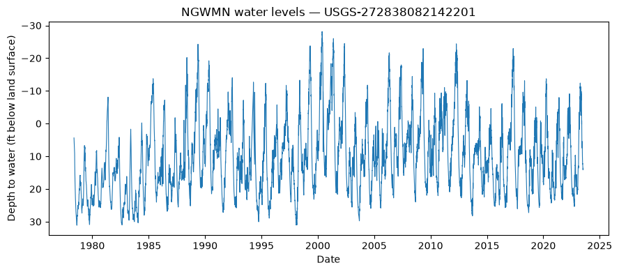

National Ground-Water Monitoring Network (NGWMN)
The National Ground-Water Monitoring Network (NGWMN) brings groundwater data from many state, federal, and local agencies into a single location. USGS exposes it through a dedicated OGC API (https://api.waterdata.usgs.gov/ngwmn/ogcapi), which dataretrieval wraps in the dataretrieval.ngwmn module — a sibling of dataretrieval.waterdata built on the same shared OGC engine, so chunking, pagination, and result shaping behave the same.
There are five getters:
Function |
Description |
|---|---|
|
Monitoring-location (well) metadata |
|
Water-level observations |
|
Lithology (geologic material) logs |
|
Well-construction records |
|
Contributing data providers |
Unlike the main Water Data collections, NGWMN aggregates locations from many agencies, so monitoring_location_id values use agency prefixes besides USGS- (e.g. MBMG-702934, AKDNR-535134236016630).
[1]:
from dataretrieval import ngwmn
Providers
List the organizations contributing data, optionally filtered by state.
[2]:
providers, md = ngwmn.get_providers(state="WI")
print(f"{len(providers)} providers in WI")
providers.head()
Retrieving: providers · 1 page · 37 rows
No API key detected — register for higher rate limits at https://api.waterdata.usgs.gov/signup/
37 providers in WI
[2]:
| id | agency_name | agency_code | organization_type | state | link | |
|---|---|---|---|---|---|---|
| 0 | WI001 | WISCONSIN DEPARTMENT OF NATURAL RESOURCES, WI | WI001 | NWIS | WI | |
| 1 | WI002 | EAST CENTRAL WISCONSIN REGIONAL PLANNING COM, WI | WI002 | NWIS | WI | |
| 2 | WI003 | DAIRYLAND POWER COOPERATIVE, WI | WI003 | NWIS | WI | |
| 3 | WI004 | NORTHERN STATES POWER COMPANY, WI | WI004 | NWIS | WI | |
| 4 | WI005 | WISCONSIN STATE LABORATORY OF HYGIENE, WI | WI005 | NWIS | WI |
Sites
get_sites returns well metadata. Sites carry geometry by default, so the result is a GeoDataFrame; pass skip_geometry=True to drop it.
[3]:
sites, md = ngwmn.get_sites(state="Wisconsin")
print(f"{len(sites)} NGWMN sites in Wisconsin")
sites[["monitoring_location_id", "monitoring_location_name", "national_aquifer_description"]].head()
Retrieving: sites · 1 page · 175 rows
175 NGWMN sites in Wisconsin
[3]:
| monitoring_location_id | monitoring_location_name | national_aquifer_description | |
|---|---|---|---|
| 0 | USGS-423114090161101 | LF-01/02E/33-0057 | Cambrian-Ordovician aquifer system |
| 1 | USGS-423214087503801 | KE-01/22E/13-0046 | Silurian-Devonian aquifers |
| 2 | USGS-423312088350401 | WW-01/16E/10-2194 | Sand and gravel aquifers (glaciated regions) |
| 3 | USGS-423523088244901 | 2N18E-31.8a | Sand and gravel aquifers (glaciated regions) |
| 4 | USGS-423532088254601 | WW-02/17E/36-0037 | Cambrian-Ordovician aquifer system |
Water levels
get_water_level returns the observations for one or more sites. A two-element datetime=[start, end] restricts the record to a time window; a list of monitoring_location_ids fans out across sites and is unioned.
[4]:
import pandas as pd
import matplotlib.pyplot as plt
site = "USGS-272838082142201"
wl, md = ngwmn.get_water_level(monitoring_location_id=site)
print(f"{len(wl)} water-level observations at {site}")
wl["sample_time"] = pd.to_datetime(wl["sample_time"], errors="coerce", utc=True)
wl = wl.dropna(subset=["sample_time"]).sort_values("sample_time")
depth = pd.to_numeric(wl["water_depth_below_land_surface_ft"], errors="coerce")
fig, ax = plt.subplots(figsize=(9, 4))
ax.plot(wl["sample_time"], depth, lw=0.8)
ax.invert_yaxis() # depth increases downward
ax.set(xlabel="Date", ylabel="Depth to water (ft below land surface)",
title=f"NGWMN water levels \u2014 {site}")
plt.tight_layout()
plt.show()
Retrieving: waterLevelObs · 1 page · 16,065 rows
16065 water-level observations at USGS-272838082142201

Restrict to a date range, or query several sites at once (they fan out and union):
[5]:
windowed, md = ngwmn.get_water_level(
monitoring_location_id=site, datetime=["2022-01-01", "2024-01-01"]
)
print(f"{len(windowed)} observations in 2022\u20132024")
multi, md = ngwmn.get_water_level(
monitoring_location_id=["USGS-272838082142201", "USGS-404159100494601"]
)
print(f"{multi['monitoring_location_id'].nunique()} sites, {len(multi)} observations")
Retrieving: waterLevelObs · 1 page · 559 rows
559 observations in 2022–2024
Retrieving: waterLevelObs · 1 page · 16,325 rows
2 sites, 16325 observations
Well construction and lithology
Construction records describe a well’s physical build-out; lithology logs describe the geologic materials with depth.
[6]:
construction, md = ngwmn.get_well_construction(monitoring_location_id=site)
construction[["monitoring_location_obs_number", "type", "material", "depth_from", "depth_to"]].head()
Retrieving: constructionObs · 1 page · 2 rows
[6]:
| monitoring_location_obs_number | type | material | depth_from | depth_to | |
|---|---|---|---|---|---|
| 0 | 1 | casing | NaN | 0 | 208 |
| 1 | 2 | screen | Screen, Type Not Known | 208 | 1123 |
[7]:
lithology, md = ngwmn.get_lithology(monitoring_location_id="AKDNR-535134236016630")
lithology[["lithology_depth_from", "lithology_depth_to", "lithology_description"]].head()
Retrieving: lithologyObs · 1 page · 1 rows
[7]:
| lithology_depth_from | lithology_depth_to | lithology_description | |
|---|---|---|---|
| 0 | 0 | 70 | glacial alluvium |